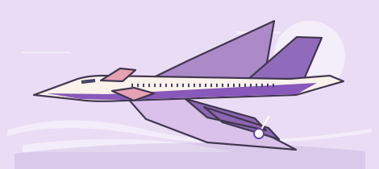

Lámina A4 · Capítulo 4
Cometa delta
El clásico dardo de papel, inspirado en el Tupolev Tu-144
Dardo · lanzamiento fuerte
Imprimir este modelo
De un vistazo
- Tiempo
- 10–15 min · 6 pasos
- Necesitas
- 1 hoja A4 o Carta · tijeras
- Punto de equilibrio
- a 152 mm del morro (A4)
- Envergadura
- 152 mm, con las puntas dobladas (A4)
- Vuelo esperado
- Dardo rápido · lanzamiento fuerte
- Pliegue
- El dardo tradicional, con puntas de 4 mm añadidas
Cómo vuela
Cometa delta es el dardo clásico. Tiene el ala más pequeña para su papel, así que debe volar rápido para sostenerse.
Tu lanzamiento le da esa velocidad. Después el peso tira de él y la resistencia lo frena, así que planea cuesta abajo.
Su ala es un triángulo largo con casi toda la superficie atrás. El aire lo sostiene por detrás del punto de equilibrio, y eso lo mantiene recto, como las plumas de una flecha.
Lo más importante son los bordes traseros. Un dardo plano pesa demasiado de morro y cae en picado. Dobla un poco hacia arriba los bordes traseros, y volará recto y lejos. Plegado con una hoja A4, debería equilibrarse a unos 152 mm del morro. Este modelo no se ha probado. Cuéntanos cómo voló.
Hazlo
Qué necesitas Una hoja rectangular y una regla. Puedes usar papel sin imprimir.
-
Paso 1 / 6
Marca el centro
Recorta la hoja por el borde grueso. Coloca la cara impresa hacia arriba y un borde corto lejos de ti. Junta los bordes largos, marca el doblez del centro y vuelve a abrir la hoja.
-
Paso 2 / 6
Lleva las esquinas al centro
Dobla las dos esquinas de arriba hacia dentro. Alinea los bordes cortos con el doblez del centro y marca las dos diagonales.
-
Paso 3 / 6
Vuelve a llevar los bordes al centro
Lleva cada borde inclinado al doblez del centro. Empieza en la punta y marca las diagonales largas una por una.
-
Paso 4 / 6
Cierra el cuerpo
Deja los dobleces hacia arriba. Dobla la mitad derecha por debajo de la izquierda siguiendo la línea del centro. Los dobleces de la punta quedan por fuera.
-
Paso 5 / 6
Dobla un ala y luego la otra
Sujeta el cuerpo cerrado con el doblez central a tu derecha. Dobla solo el ala de arriba hacia fuera por la línea que está a 18 mm de ese borde. Dale la vuelta y repite con la otra ala. Desde la cola, las alas y el cuerpo dibujan una T.
-
Paso 6 / 6
Levanta los extremos de las alas
Levanta cada punta del ala unos 10 mm por encima del pliegue del cuerpo. Dobla hacia arriba los 4 mm exteriores de cada ala hasta que las dos puntas queden verticales. Mira desde la cola y comprueba que tienen la misma altura.
Lánzalo
Sujeta el cuerpo por debajo de las alas, cerca del punto de equilibrio. Lánzalo fuerte y recto, con el morro un poco por encima de la horizontal. Usa una sala larga o un día sin viento al aire libre, y nunca lo lances hacia la cara de nadie: la punta es afilada.
Ajústalo
| Si… | Prueba esto |
|---|---|
| Cae en picado | Dobla los bordes traseros 1 mm hacia arriba, y luego 2 mm. Hazlo antes que nada. Casi nunca hace falta un clip en el morro: con uno, cae aún más. |
| Vibra o se abre en el aire | Vuelve a marcar con fuerza el pliegue del cuerpo. |
| Gira a la izquierda | Míralo desde atrás e iguala las dos alas, las dos puntas y la V. Después dobla 1 mm hacia arriba el borde trasero del ala derecha. |
| Gira a la derecha | Iguala los dos lados. Después dobla 1 mm hacia arriba el borde trasero del ala izquierda. |
| Se vuelca y baja en espiral | Levanta cada punta unos 10 mm por encima del pliegue del cuerpo, las dos a la misma altura. |
Qué probar. Estos ajustes siguen cómo se comportan los planeadores de papel. Aún no se han probado en este modelo.
Por qué existe

Por qué existe
Es el dardo que casi todo el mundo aprende primero. Nadie sabe quién lo plegó por primera vez. Open Flight lo midió, dibujó cada pliegue a escala y le añadió puntas de 4 mm.
Su nombre recuerda al Tupolev Tu-144, el primer avión supersónico de pasajeros que voló. Despegó cerca de Moscú el 31 de diciembre de 1968. Los dos son deltas sin cola. Ninguno tiene cola horizontal, así que los dos se equilibran con superficies móviles en el borde trasero del ala. En el Tu-144 se llaman elevones. En papel, son los bordes traseros que doblas. Los Tu-144 posteriores añadieron pequeñas alas retráctiles cerca del morro para volar a poca velocidad. El dardo de papel no copia el ala curva de doble flecha del Tu-144.
Toma del Tu-144 el delta sin cola y sus elevones: los bordes traseros que doblas.
Prueba esto
¿Qué hacen los bordes traseros?
Primero, predice. Predice primero: plano, cae en picado pronto. Con los bordes traseros hacia arriba, vuela más recto y más lejos.
- Pliega un Cometa delta.
- Lánzalo cinco veces con los bordes traseros planos, con el mismo empujón firme.
- Dobla 2 mm hacia arriba los últimos 15 mm de cada ala, junto al cuerpo.
- Lánzalo cinco veces más con el mismo empujón.
- Marca dónde toca el suelo cada vuelo por primera vez.
En qué fijarte. Fíjate si cae en picado pronto con los bordes planos, y si vuela más recto y más lejos con los bordes hacia arriba.
Más a fondo
El alargamiento de Cometa delta, una medida de lo larga y estrecha que es un ala, es 1,03. Sus bordes delanteros van inclinados hacia atrás 67,5°, y el ala mide 240 mm de fondo junto al cuerpo y 56 mm en la punta. El punto de equilibrio está a 152 mm del morro, al 21 % de la anchura media del ala. Un modelo sencillo de ala plana sitúa el punto neutro, el lugar donde actúa la sustentación extra cuando el morro se levanta, a 166 mm (30 %). La diferencia, de alrededor del +9 % de la anchura media, lo mantiene estable. Pero un ala plana equilibrada así solo se asentaría donde no sustenta, así que caería en picado. Doblar un poco hacia arriba los bordes traseros hace que el aire empuje la cola hacia abajo, y el avión planea con el morro algo levantado y sustenta: los bordes doblados hacen el trabajo del timón de profundidad de un avión grande. Llevar las esquinas al centro añade capas, pero mueve el papel hacia dentro y hacia atrás, no hacia delante. El equilibrio depende de dónde está el peso respecto a la sustentación, no de lo pesado que parezca el morro. Con más ángulo, las alas en triángulo estrechas ganan sustentación extra con los remolinos de aire de sus bordes delanteros (Polhamus). Todas estas cifras son estimaciones a partir de la geometría de los pliegues.
Cada metro cuadrado de ala lleva unos 198 g (1,9 N/m²), así que planea a unos 2–3 m/s y va mucho más rápido al lanzarlo. Categoría de competición: distancia. Los dardos aguantan lanzamientos fuertes. Las competiciones piden una hoja sin cortar, así que entrena con la versión de hoja entera.
Haz una variante en el laboratorio ↗
Fuentes
- NASA Glenn Research Center · Beginner’s Guide to Aeronautics: Aircraft elevator · Cómo un borde trasero levantado sube el morro.
- NASA Glenn Research Center · Beginner’s Guide to Aeronautics: Aircraft center of gravity · Dónde actúa el peso y cómo encontrarlo.
- Exploratorium · Paper Airplanes, page 2 · El equilibrio por delante de la sustentación, los pliegues del morro y el borde trasero levantado.
- NASA Technical Reports Server · Tu-144 flight research · El ala del avión real y sus ensayos en vuelo.
- Technik Museum Sinsheim · Tupolev Tu-144 · Un Tu-144 que puedes ver hoy.
- E. C. Polhamus (1966), A concept of the vortex lift of sharp-edge delta wings based on a leading-edge-suction analogy, NASA TN D-3767 · La sustentación extra de los vórtices sobre bordes afilados.